Research & Lab
My research program combines physics-based numerical modelling, cloud-scale remote sensing, and high-resolution field and UAV surveys to solve critical water resources and climate hazard challenges in coastal, urban, and hilly regions of Bangladesh.
Research program at a glance
From core methodological pillars to real-world resilience. Click any foundation to expand details, or an application area to filter related publications.
Three Methodological Pillars
Physics-Based Modelling · Cloud Earth Observation · Multi-Criteria GIS
Integrated frameworks for data-scarce watersheds & fragile coasts
Applied Research Streams
Storm Surge & Coastal Hazards
Cyclone surge & SAR flood mapping
View papers →River & Urban Flood Modelling
2D inundation & ungauged catchments
View papers →Climate & Hydrologic Extremes
ETCCDI indices & trend analytics
View papers →Water Security & Harvesting
Hybrid RWH-SHP & GIS-MCDM
View papers →Selected publications & manuscripts
Representative studies across coastal flood mapping, climate extremes, river hydrodynamics, and rainwater harvesting. See the full publication list for all outputs.
Flood Mapping in the Coastal Region of Bangladesh Using Sentinel-1 SAR Images: A Case Study of Super Cyclone Amphan
Chakma, P., & Akter, A. (2021) · Journal of Civil Engineering Forum, 7(3), 267–278
Read the paper (DOI) →A Long-Term Spatiotemporal Variability Analysis of Precipitation Climate Extreme Indices in Chattogram Using Satellite-Driven Precipitation Data
Chakma, P., & Sirajee, A. (2025) · ICCEI 2025 Proceedings, pp. 1778–1783
Read Full Paper (PDF) →Storm Surge Inundation Modelling for Cyclone Amphan in Bangladesh
Chakma, P., & Akter, A. · Journal of Natural Hazards (Under Review)
View Project Summary →Optimal Site Selection for Rainwater Harvesting Through a Combined Approach of GIS and MCDM
Dutta, H., Yeamin, S., Alam, M. M., & Chakma, P. · Journal of Water Resources Management (Submitted)
Read Preprint (Research Square) →A Cloud-Based Rainfall-Runoff Model Using Google Earth Engine
Sirajee, A., & Chakma, P. (2025) · ICCEI 2025 Proceedings, pp. 1754–1759
Read Full Paper (PDF) →Flood Inundation Mapping of Upper Meghna River of Bangladesh Using HEC-RAS 2D
Al Mahmud, A., Chakma, P., Islam, A., Bin, A., & Annwoy, H. (2025) · ICCEI 2025 Proceedings, pp. 1742–1747
Read Full Paper (PDF) →Ongoing & completed research initiatives
Supported by the Directorate of Research and Extension (DRE), CUET and partial UNDP co-funding (totaling USD 18,000 in competitive research grants). Click any project thumbnail to enlarge.
Design and Implementation of a Hybrid Rainwater Harvesting System for Water-Scarce Hilly Regions of Bangladesh
Developing a hybrid water-energy harvesting system for water-scarce tribal communities in hilly regions of Bangladesh, integrating rooftop rainwater harvesting, surface runoff storage, and a Small Hydroelectric Plant (SHP) for decentralized energy recovery.
- Conducted high-resolution UAV drone surveys to generate an accurate Digital Terrain Model (DTM) of the study area.
- Developed an HEC-HMS hydrologic model to simulate runoff generation under varying rainfall conditions and optimize storage sizing.
- Also supervised a companion GIS & AHP Multi-Criteria Decision-Making (MCDM) suitability study across 14 biophysical and socio-economic criteria in northwestern Bangladesh (validated via sensitivity & Kappa accuracy analysis).
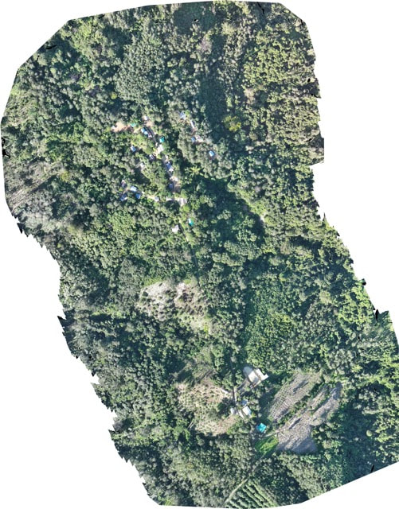
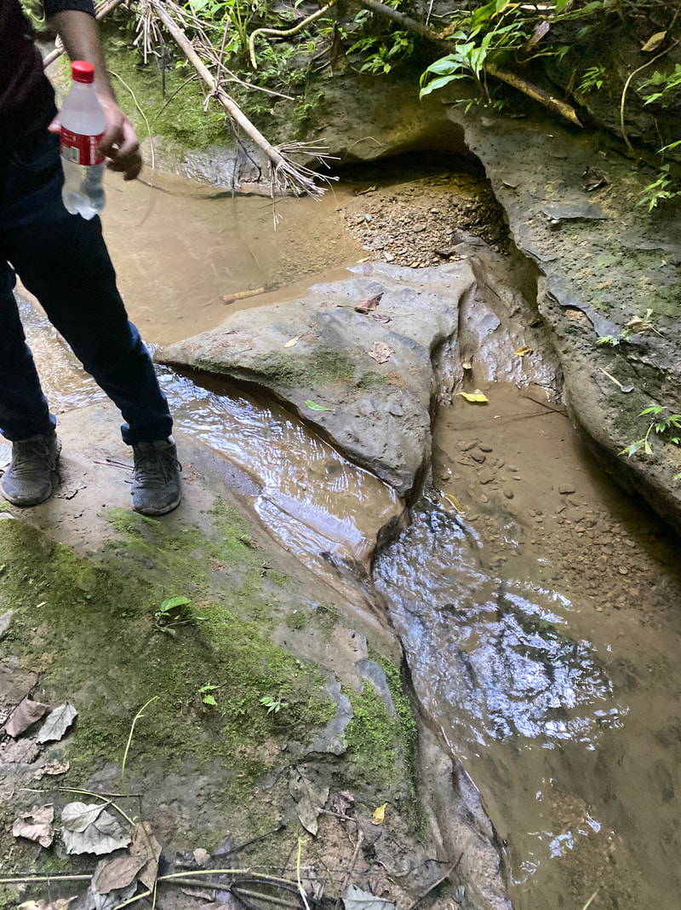
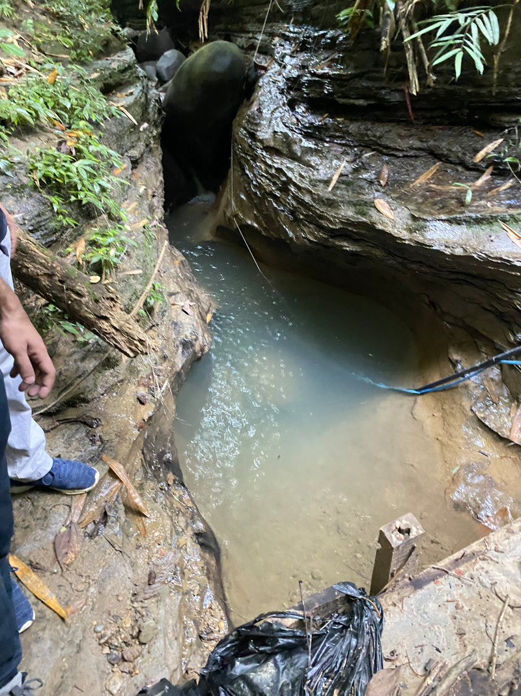
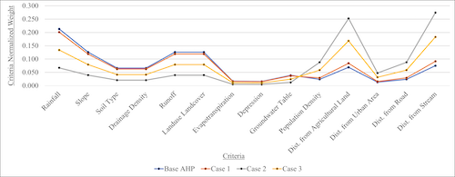
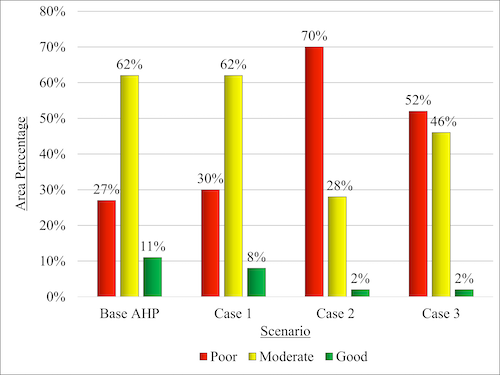
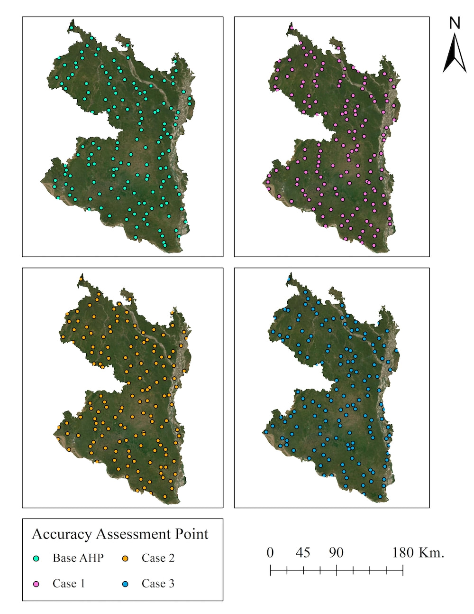
Multi-Hazard Resilience Assessment of Coastal Communities for Earthquake and Storm Surge
An interdisciplinary investigation assessing the compound vulnerability and resilience of coastal communities in Bangladesh exposed to both seismic hazards and tropical cyclone-induced storm surges.
- Collaborating with the Institute of Earthquake Engineering Research (IEER), CUET to develop multi-hazard risk reduction and adaptive planning frameworks.
- Collected and digitized historical and contemporary hydrographic charts of the nearshore coastal zone.
- Developed a flexible-mesh hydrodynamic tide and surge model in Delft3D-FM by integrating global bathymetry (GEBCO) with high-resolution digitized nearshore hydrographic datasets.

Assessing the Impact of Climate Change on Urban Flooding in Chattogram City Using Mathematical Modelling
Investigating the impact of climate change–driven extreme rainfall on urban waterlogging and flash flooding in data-scarce coastal cities of Bangladesh, focusing on Chattogram city.
- Developed a comprehensive methodological framework for coupled hydrologic–hydraulic flood modelling in ungauged urban watersheds.
- Conducting extensive field surveys across urban catchments to measure stormwater drain widths, cross-sections, and invert elevations.
- Developing an integrated urban drainage model in EPA-SWMM alongside a 2D Rain-on-Grid model in HEC-RAS using a 3-m resolution LiDAR DEM and field-surveyed drainage geometry.
Storm Surge Inundation Modelling for Cyclone Amphan (2020) in Bangladesh
Simulated tropical cyclone–induced storm surge propagation and coastal inundation along the funnel-shaped Bay of Bengal coast using Super Cyclone Amphan (2020) as a benchmark case study.
- Developed a coupled hydrodynamic and wave model using Delft3D-FLOW and Delft3D-WAVE to capture wave-current interaction during landfall.
- Generated parametric wind and pressure fields using both IMD and JTWC best-track datasets to evaluate sensitivity to meteorological forcing.
- Validated coastal inundation extent against Sentinel-1 SAR satellite observations and identified 3 critical limitations of surge modelling in data-scarce deltas.
- Resulted in 1 published journal article (J. Civil Engineering Forum, 2021) and 1 manuscript under review in Journal of Natural Hazards.
Long-Term Spatiotemporal Variability Analysis of Precipitation Climate Extreme Indices (1981–2024)
Evaluated 43 years (1981–2024) of daily satellite precipitation data to quantify how climate change is altering rainfall intensity, frequency, and wet/dry spell duration across southeastern Bangladesh.
- Processed 43 years of CHIRPS daily satellite rainfall in Google Earth Engine (GEE) to compute ETCCDI indices (PRCPTOT, Rx1day, Rx5day, R10mm, R20mm, R95p, R99p, CDD, CWD).
- Applied non-parametric Mann–Kendall trend tests and Sen's slope estimator (via Python's
pyMannKendall) and identified statistically significant increasing trends in extreme wet indices. - Published in ICCEI 2025 and deployed as a public interactive GEE decision-support web app.
Groundwater Recharge Estimation & Microbial Fuel Cell (MFC) Evaluation
Foundational hydrogeological and environmental engineering research conducted at CUET:
- Groundwater Recharge (2019–2020): Analyzed weekly groundwater table observations from 10 monitoring wells across 5 urban districts in Bangladesh using the Water Table Fluctuation (WTF) method and borelog-derived specific yield (published in ICCESD 2020).
- B.Sc. Thesis — Microbial Fuel Cell (2016–2017): Designed and constructed a two-chamber Microbial Fuel Cell (MFC) utilizing household anaerobic activated wastewater and evaluated bio-electrochemical power generation efficiency.
Geospatial surveying, drone photogrammetry & rural water supply
Translating engineering research into field-scale infrastructure and environmental management with international development partners (German Government, Government of Japan, RENATA Ltd.).
SCIP Plastic Pollution & Waste Dumping Site Drone Mapping Project
Under the Sustainable Capacity Building to Reduce Irreversible Pollution by Plastics (SCIP) project funded by the German Government, conducted UAV drone surveys across the study area to identify, map, and spatially analyze 27 solid waste dumping sites. Generated high-resolution orthomosaics in WebODM / Pix4D and quantified hotspot areas in QGIS.

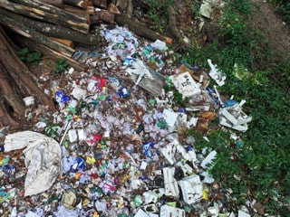
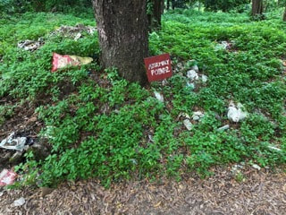
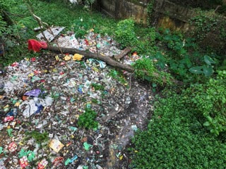
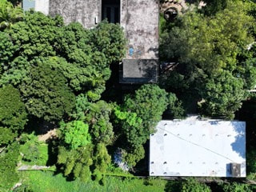
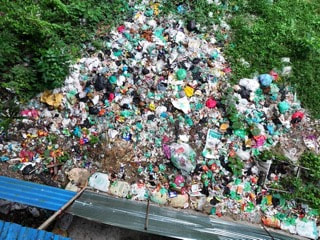
Sewer Design Project at CUET Campus
Supporting modern wastewater and sewer infrastructure planning at Chittagong University of Engineering and Technology (CUET):
- Conducted high-precision UAV drone photogrammetric surveys and generated a centimetre-scale Digital Terrain Model (DTM) along a 300-ft, two-lane campus corridor.
- Integrated UAV-derived topographic elevation rasters directly into Bentley SewerGEMS to support hydraulic grade line and sewer network design.
Kinitheu Tribal School Water Supply Project, Bandarban
Designed a complete, off-grid sustainable water supply system for 50+ resident children at a remote tribal residential school in the Bandarban hills, overcoming a ~400-ft elevation difference from the mountain stream (jhiri).
- Designed a solar-powered water lifting and collection pumping system for off-grid operation.
- Designed a pretreatment sedimentation tank, elevated gravity storage tank, and integrated rooftop rainwater harvesting.


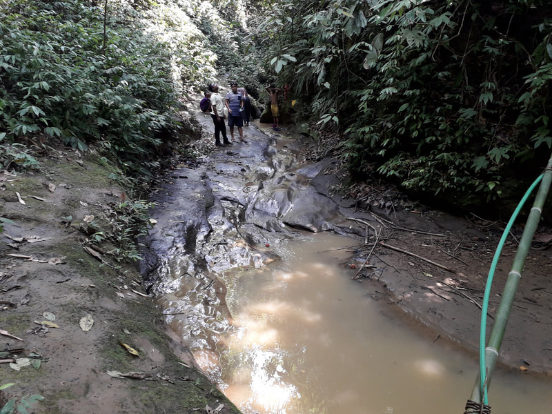
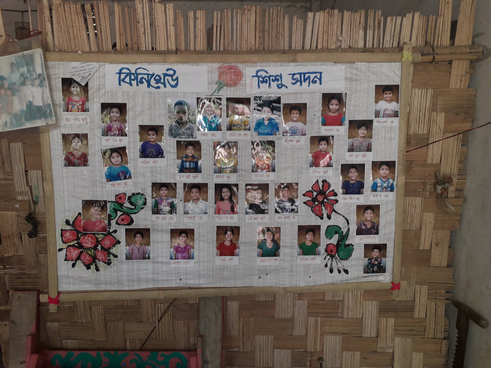
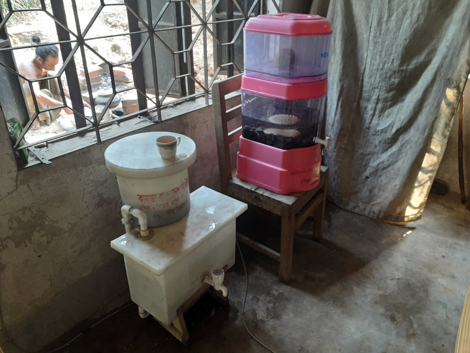
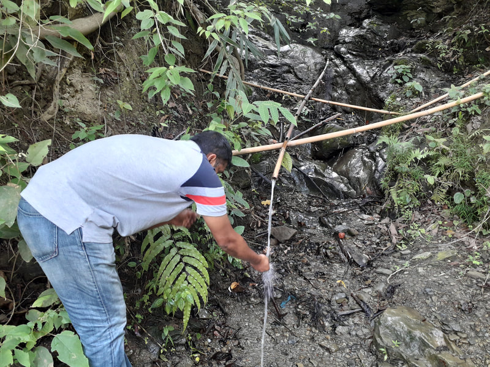
Co-authors & research collaborators
Interactive map of faculty collaborators, research assistants, and thesis advisees across our publications and funded research grants.
Current research assistants
Motivated undergraduate researchers working on urban flood modelling, rainwater harvesting, coastal hazards, remote sensing, and machine learning in water resources engineering.
Hera Dutta
4th Year · WRE, CUET
Research Interests: Urban Flood Modelling, Rainwater Harvesting, GIS & MCDM.
Md. Mushfiqul Alam
4th Year · WRE, CUET
Research Interests: Urban Flood Modelling, Rainwater Harvesting, Spatial Analysis.
Sehba Yeamin
4th Year · WRE, CUET
Research Interests: Rainwater Harvesting, Coastal Flood Hazard, Remote Sensing in WRE.
Md. Atikur Rahman
3rd Year · WRE, CUET
Research Interests: Storm Surge Modelling, Machine Learning Applications in WRE.
Undergraduate thesis advisees
I have supervised 10+ undergraduate theses across Batch 2018–19 and Batch 2019–20, resulting in multiple peer-reviewed international conference publications.
Anika Sirajee
Cloud-Based Rainfall-Runoff Model & ETCCDI Indices in GEE (2 ICCEI Papers)
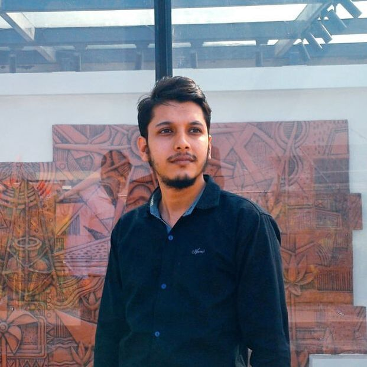
Md. Modasshir Rokon
Upper Padma & Ganges River Surface Water Dynamics (3 Conference Papers)
Rubayatul Islam Oishe
Upper Padma & Ganges River Surface Water Dynamics (3 Conference Papers)
Abdullah Al Mahmud
Flood Inundation Mapping of Upper Meghna River Using HEC-RAS 2D (ICCEI 2025)
Araf Bin Haque Annwoy
Flood Inundation Mapping of Upper Meghna River Using HEC-RAS 2D (ICCEI 2025)
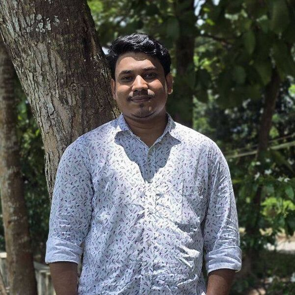
Md. Sheikh Farid
Flood Damage Assessment Using Sentinel-1 SAR Data
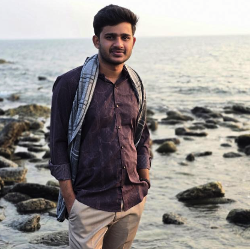
Md. Rakib Mia
Flood Damage Assessment Using Sentinel-1 SAR Data
Md. Aminul Islam
Spatiotemporal Analysis of Drought in Bangladesh Using Multi-Index Remote Sensing
S. M. Sayedul Islam Jamil
Spatiotemporal Analysis of Drought in Bangladesh Using Multi-Index Remote Sensing
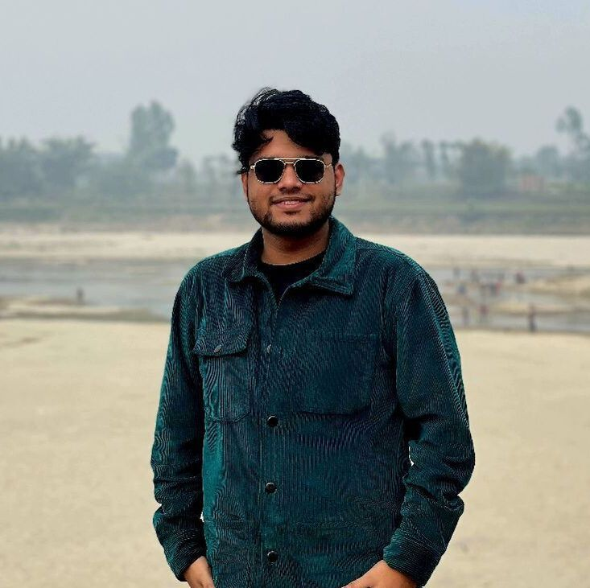
Md. Tasmin Haque Pranto
Flood Hazard Mapping for Faridpur & Manikganj Using HEC-RAS and MCA
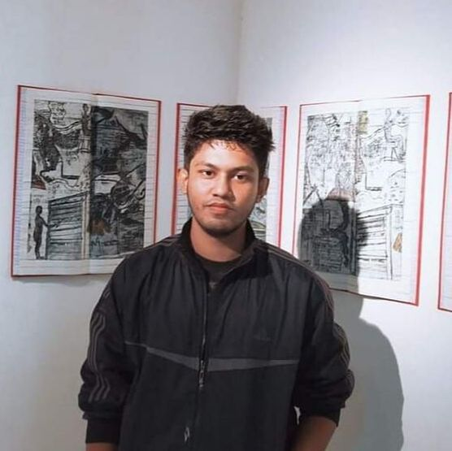
Abrar Galib Bhuiyan
Flood Hazard Mapping for Faridpur & Manikganj Using HEC-RAS and MCA
Ishtiaque Chowdhury
Entropy-Weighted Flood Hazard Mapping: Case Study of Sunamganj District
Md. Zamil Khan
Entropy-Weighted Flood Hazard Mapping: Case Study of Sunamganj District
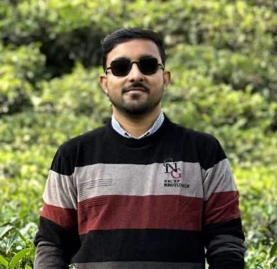
Md. Akib Malik
Assessing Urbanization Effects on Flood Events Using HEC-HMS in Sylhet
Md. Muntasir Mahmud
Flood Inundation Mapping of Teesta River
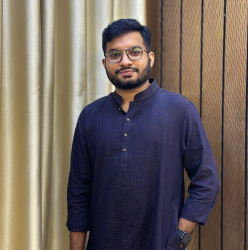
Farez
Flood Inundation Mapping of Teesta River
Udoy Paul
Department of Water Resources Engineering, CUET
Tushar Chowdhury
Department of Water Resources Engineering, CUET
Md. Mahbub
Flood Inundation Mapping in the Jamuna River Using HEC-RAS 2D Model
Interested in joining the research group?
I actively welcome motivated undergraduate and graduate students interested in storm surge modelling, hydrologic/hydrodynamic modelling, remote sensing (Google Earth Engine), and AI/ML applications in water resources. Read our Prospective Student & Research Opportunity Guidelines to apply.